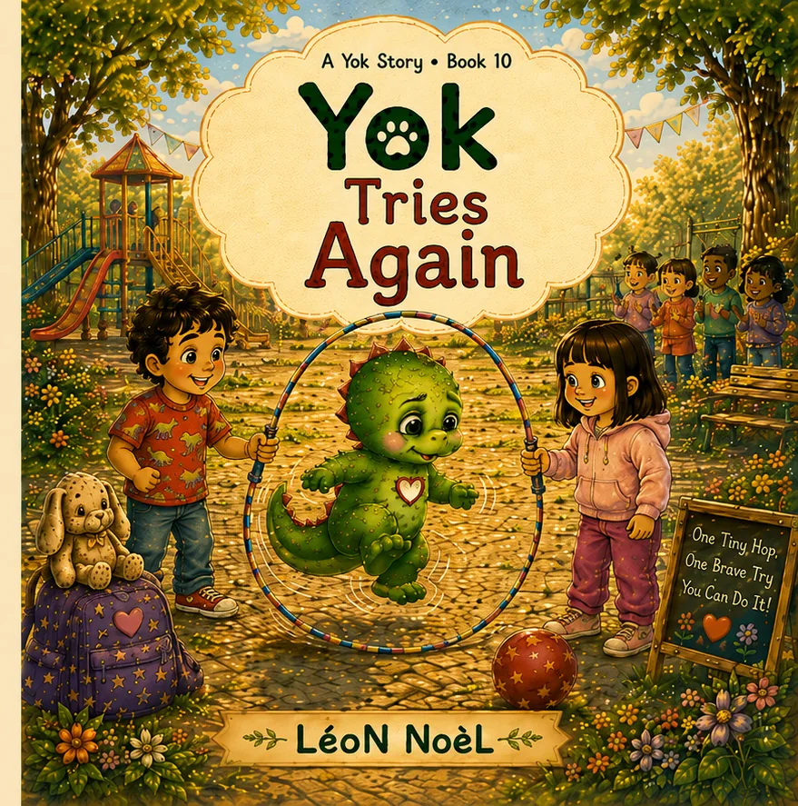

A Yok Story · Ages 3–6
Yok Tries Again
Jump rope feels too hard until Yok breaks the task into one tiny piece and tries again when ready.

Inside the story
A gentle moment children can carry with them.
For parents, teachers, and librarians
The story is designed to leave room for conversation rather than turn reading time into a lesson—giving grown-ups an easy opening for questions, reassurance, and practice.
Keep the story going
Free companion resources.
Printables for home, classroom, library, or a quiet follow-up after reading.
Explore more